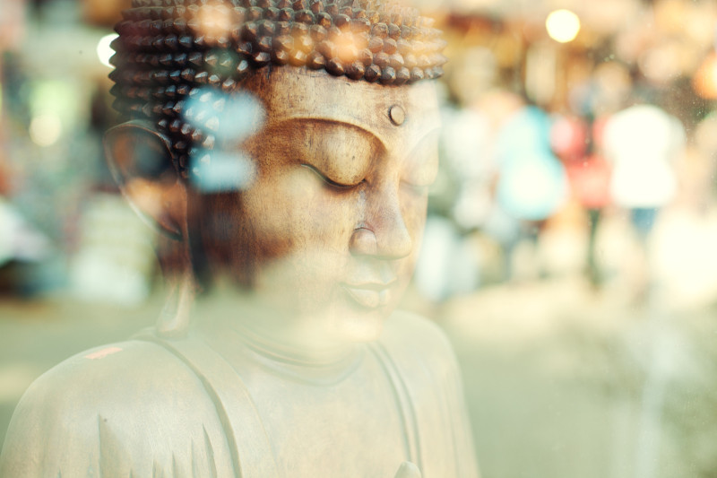

What's Up
In het Bamboehuis is er tijd voor workshops op vrijdagavond en/of in het weekend. Workshops zijn er in vele soorten en maten.
- Het kunnen korte retraites zijn die we zelf organiseren, zodat je een keer langer dan 1 of 2 uur achter elkaar met yoga en meditatie bezig kunt zijn.
- Het kan ook zijn dat we iemand uitnodigen om dieper op een onderwerp in te gaan of om een speciale yogales te geven.
- Workshops die in eerste instantie niet gerelateerd zijn aan yoga en meditatie, maar wel bijdragen aan zelfontwikkeling en bewustwording, behoren ook tot de mogelijkheden.
- Ook zullen we af en toe een introductie workshop geven zodat je kennis kunt maken met yoga en meditatie in het Bamboehuis.
- Workshops worden gegeven bij aanmelding van minimaal vier deelnemers.
Heb je een idee voor een workshop of kun jij zelf een workshop geven? Laat het ons weten!

zaterdag 6 juni
van 8:30 tot 17:00 uur

zaterdag 3 juli
van 9:00 tot 15:00 uur
zaterdag 3 juli
van 9:00 tot 15:00 uur